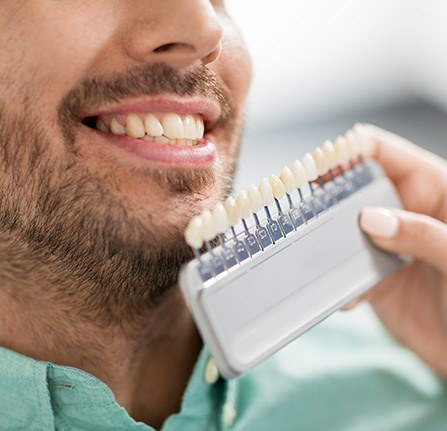
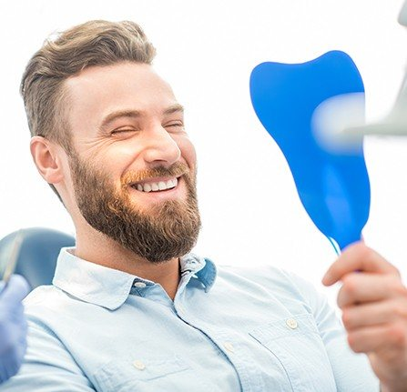
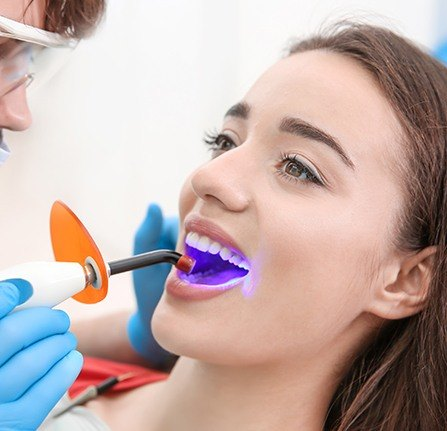
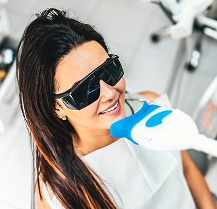
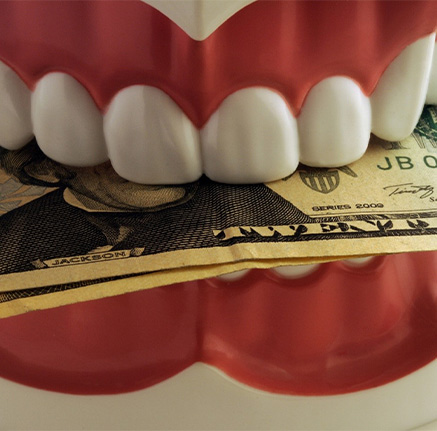
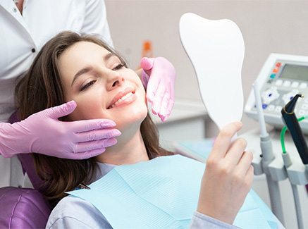

Welcoming New and Existing Patients
A smile can say a lot about a person, especially when you are meeting them for the first time. When you’re afraid to show your teeth, it can take a toll on your self-confidence and your perception of the world, but we’re prepared to help you change that. With our cosmetic treatments, including everything from whitening to porcelain veneers and more, we can help you achieve the smile of your dreams. Call Sweet Smiles Family Dentistry today to schedule your first appointment to discuss cosmetic dentistry in Grafton, WI!

Porcelain veneers can effectively hide the majority of cosmetic dental issues with a single treatment. Ultra-thin sheaths of porcelain are customized to fit over your teeth and match (or improve) the shade of your enamel. To place veneers, we remove a very small amount of enamel, take impressions of your teeth, then use those impressions to design your porcelain veneers. With proper care, they should last for well over a decade.

Sweet Smiles Family Dentistry makes the effort to utilize materials that resemble tooth enamel as closely as possible. Whether you are getting a dental filling, crown or porcelain veneer placed, we make sure our materials are esthetically pleasing and functional. Rather than settle for silver crowns or fillings, which has long been the dental standard, you can expect restorations free of any metal that looks completely natural.

A fast and effective solution for chipped, cracked or gapped teeth, cosmetic bonding offers a great way to take care of minor flaws in as little as an hour. Using plastic composite resin, we can artfully sculpt it around your tooth to hide any imperfections. This material is then hardened using a special curing light. You can expect your bonding to last for at least 10 years or longer.
Learn More About Cosmetic Dental Bonding

Sometimes, a round of teeth whitening is all that you need to give yourself newfound confidence when showing your smile. Whether you want to get it done in the dental office or through convenient take-home kits, both options are available when you visit Sweet Smiles Family Dentistry. We use Venus Whitening to make your teeth several shades brighter quickly and effectively. Our treatments can make stains due to coffee, wine, tobacco, and even natural aging seemingly disappear.
Learn More About Teeth Whitening

Paying for cosmetic dentistry can sometimes be a little bit intimidating for patients considering the fact that it’s unlikely to be covered by insurance. You’ll be happy to learn that these treatments absolutely do not have to break the bank; understanding the procedures and financial options available to you will allow you to make your ideal smile fit your budget.
We’ll be able to give you more detailed assistance when we meet you in person, but before that here’s some information that could help you budget for care in the meantime.

One of the first things you need to know about budgeting for cosmetic dentistry is that there are a variety of treatments available to you, each of which comes in at a different price point. If your budget is tight, treatments like cosmetic dental bonding and teeth whitening tend to be on the inexpensive side of what cosmetic dentistry has to offer. However, if you’re interested in making more sweeping changes to smile, you might want to invest in more expensive treatments like veneers or crowns.
Finding the right treatment plan for you comes down to balancing between your needs are what you’re willing to pay. We’ll be able to assist you with that decision-making process when we meet you in person and have a better sense of your needs.
While cosmetic dentistry can sometimes seem like a large financial commitment, it’s worth remembering that you’re getting something substantial for your money. These treatments can afford you greater self-esteem, allowing you to enjoy a richer social and professional life. When you see your new smile for the first time and feel the confidence that it gives you, you’re sure to find that the investment has paid off.
That said, we understand that paying for an entire dental treatment out of pocket can be a tall order, which is why we offer a series of financial options that can potentially make paying for care a little bit easier.
For one, we offer an in-house savings plan that functions a little bit like a more versatile insurance, but without the need for deductibles. For a flat monthly fee of $15, you can get a host of complimentary services from us as well as 15% off of most treatments.
We also frequently work with financing firms like CareCredit, which can front the cost of care and allow you to pay it off over the course of several months. Depending on the term you select, this can be done without incurring any interest on this financing.
If you’re interested in this or any other method of paying for care, give us a call and we’ll be happy to talk to you about them.
Are you ready to have the smile you’ve always wanted? At Sweet Smiles Family Dentistry, we have an array of services to help you erase your dental imperfections and achieve a set of pearly whites you’ll be excited to show off! For your convenience, we’ve gathered some of the most common questions we get about cosmetic dentistry below. If you don’t see the answers you’re looking for, don’t hesitate to give us a call or schedule your consultation!
With the help of cutting-edge technology and high-quality dental materials, nearly anyone who doesn’t love the look of their smile can benefit from cosmetic dentistry! However, you may need to complete a few preliminary treatments before you can be considered a good candidate. Oral health issues like cavities, gum disease, and teeth grinding can make some cosmetic services uncomfortable, less effective, or even unsuccessful, so they’ll need to be treated first. Once your smile is healthy, we can move on to improving its appearance.
At Sweet Smiles Family Dentistry, we don’t believe in cookie-cutter cosmetic dentistry. After all, no two smiles are exactly the same! That’s why the length of each treatment will vary from patient to patient depending on their unique needs and goals. Some services like cosmetic dental bonding and in-office teeth whitening can be completed in a single quick and easy appointment. On the other hand, custom-made solutions like metal-free restorations or porcelain veneers may take a few weeks to design, create, and place.
Has a diet of too much soda left your son or daughter with stained teeth? Did they chip a tooth while playing sports or while roughhousing with friends? Our smiles play a key role in our self-confidence, especially as a child or teenager. Thankfully, some cosmetic treatments like teeth whitening and cosmetic dental bonding can help growing smiles look their best once again! However, they’ll need to be in good oral health and will usually need to have all their permanent teeth. Of course, they’ll also have to come in for a consultation to make sure cosmetic dentistry is a good choice for them.
Unfortunately, most dental insurance plans don’t cover the cost of cosmetic dental treatments. But that doesn’t mean the smile you’ve always wanted is out of reach! We are proud to offer low- to no-interest financing options through CareCredit. This third-party company will help you break down the cost of your treatment into smaller payments that easily fit into your monthly budget. During your consultation, we’ll go over your personal estimate for the service you’re interested in as well as just how affordable making your dream smile a reality can be!
With so many versatile cosmetic solutions available, determining which one is right for you can feel somewhat overwhelming. That’s why your first step towards a beautiful smile should be to come see us for a consultation. We’ll take the time to have a discussion with you about your goals and concerns, then inspect your teeth, gums, and jaw. Once we’ve fully explained your options as well as our recommendations, we’ll work with you to create a custom treatment plan for achieving the happy, healthy, and beautiful smile you deserve.
9:00am – 6:00pm
9:00am – 6:00pm
9:00am – 6:00pm
9:00am – 6:00pm
8:00am – 2:00pm